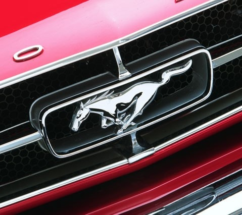
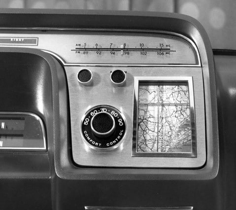
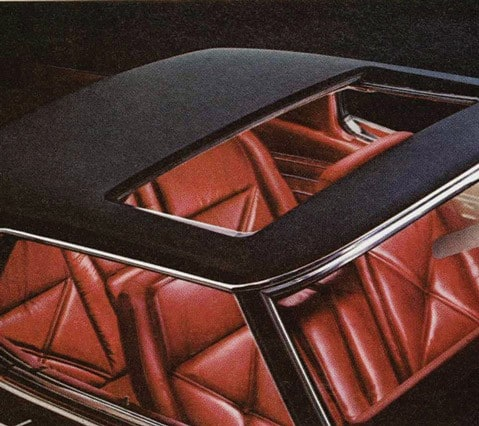
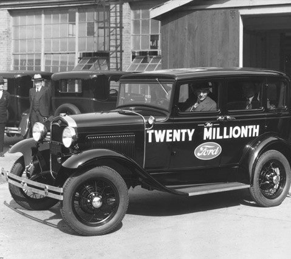

Henry Ford revolucionou a vida de muitas pessoas com sua visão de tornar um carro prático e acessível. A linha de montagem móvel e as técnicas de produção em massa que desenvolveu, estabelecem o padrão para a prática industrial mundial, na primeira metade do século XX. A história começa em Springwell, no estado de Wayne, Michigan, a 30 de julho de 1863, quando Henry era o primogénito dos seis filhos de William e Mary Ford. Cresceu numa quinta familiar próspera, e foi educado numa escola pequena com uma apenas uma turma, onde, desde cedo, mostrou interesse por tudo o que estava relacionado com a mecânica. Este interesse se torna-lo-ia num verdadeiro génio, ganhando o reconhecimento enquanto "um dos maiores industriais do mundo".
   Henry Ford começou jovem. Aos 12 anos, passava a maior parte do tempo livre numa pequena oficina de máquinas, que ele próprio equipou. Foi também aqui que a sua primeira máquina a vapor, em 1878, foi construída quando tinha apenas 15 anos. No ano seguinte, Henry saiu de casa, para a cidade vizinha de Detroit, para trabalhar como aprendiz de maquinista.
O ponto culminante dos seus experimentos foi a construção de um veículo automotor - o Quadriciclo - em 1896. O primeiro motor da Ford abriu caminho para a história, na sua mesa de cozinha de madeira em Bagley Avenue, e logo se seguiu o seu próximo projeto, um motor montado numa armação, equipado com quatro rodas de bicicleta - o primeiro carro da Ford.
Depois de renunciar a sua posição em Edison em 1898, Henry fundou a Detroit Automobile Company. Infelizmente, a empresa faliu. Longe de desistir, ele começou a projetar carros de corrida, chegando a pilotar os "Sweeptakes" para a vitória, derrotando o campeão americano, Alexander Winton, a 10 de outubro de 1901.
A história da indústria automobilística experimentou uma verdadeira revolução quando, em 1903, foi fundada a Ford Motor Company. Henry Ford contava com uma participação de 25,5% e era o Vice-Presidente e Engenheiro-chefe. Inicialmente, apenas alguns veículos foram produzidos na fábrica de Mack Avenue, Detroit, onde duas ou três pessoas foram responsáveis pela montagem dos veículos graças aos componentes personalizados. O primeiro veículo fabricado pela empresa foi vendido em julho de 1903 e Henry tornou-se Presidente, tornando-se o proprietário da empresa três anos depois.